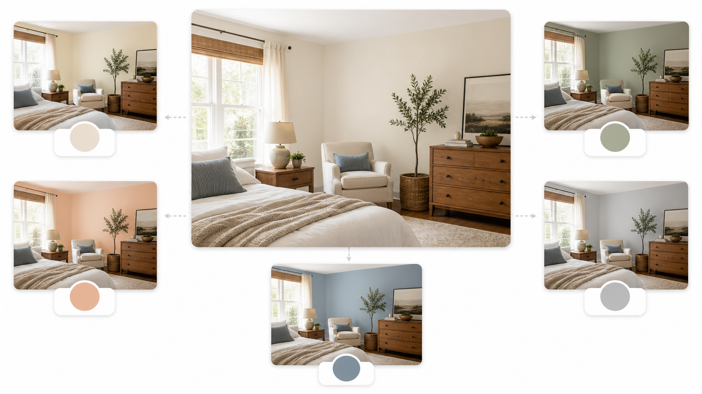

Промтзилла
Цвет стен зависит не только от вкуса: нейросеть должна смотреть на освещение, оттенок пола, мебель, текстиль и размер комнаты.

Пошаговая инструкция
- 1Сними комнату днём при естественном свете и вечером при включённых лампах.
- 2Загрузи фото и укажи, какие предметы останутся после ремонта.
- 3Попроси 5 вариантов стен: нейтральный, тёплый, холодный, акцентный и безопасный.
- 4Попроси объяснить, почему каждый цвет подходит именно этой комнате.
- 5Перед покраской проверь выбранный оттенок на выкрасах при разном освещении.
Какой результат просить
Лучший формат ответа — один главный вариант и несколько альтернатив, чтобы можно было сравнить настроение комнаты. Для такого сценария можно использовать GPT Image в Study24: загрузи исходные материалы, вставь промт и попроси несколько вариантов.
Промт
RU
Подбери цвет стен для этой комнаты по фотографии. Учитывай: — естественное и искусственное освещение; — цвет пола, мебели, дверей и текстиля; — размер комнаты и ощущение простора; — стиль интерьера; — практичность цвета в реальной жизни. Покажи 5 вариантов: 1. самый безопасный нейтральный; 2. тёплый уютный; 3. прохладный спокойный; 4. акцентный, но не кричащий; 5. вариант, который визуально расширяет комнату. Для каждого варианта объясни, почему он подходит, и какие цвета мебели или текстиля лучше добавить.
EN
Choose wall colors for this room based on the photo. Consider: — natural and artificial lighting; — floor, furniture, doors, and textiles; — room size and sense of space; — interior style; — real-life practicality. Show 5 options: 1. safest neutral; 2. warm and cozy; 3. cool and calm; 4. accent color, but not loud; 5. a color that visually expands the room. For each option, explain why it works and what furniture or textile colors should be added.
Важно
Экран и генерация могут искажать оттенки. Финальный цвет всегда проверяй живым выкрасом на стене.
Теги